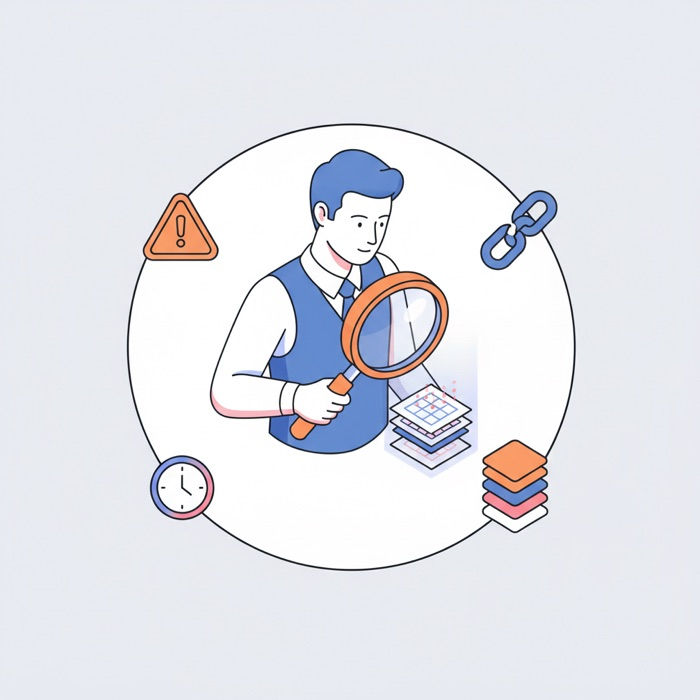
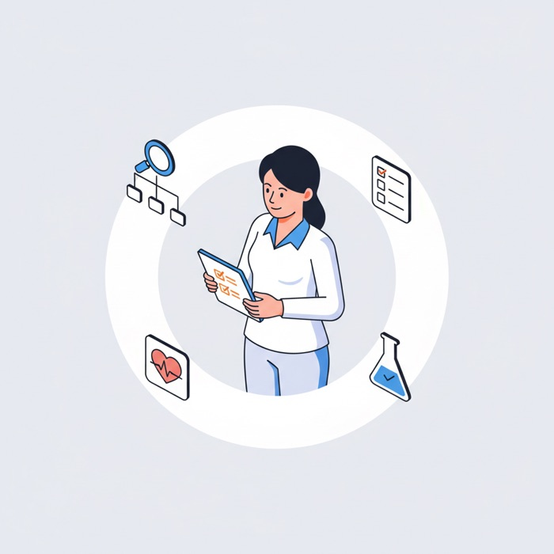

This case study describes the work at a high level. Specific metrics, internal tooling configurations, agent instructions, and proprietary processes have been generalized or anonymized to respect client confidentiality. The frictions, architecture, and design thinking remain authentic to my contribution. このケーススタディは、取り組みを高いレベルで概観したものです。具体的な数値、社内ツールの構成、エージェントの指示、独自のプロセスは、クライアントの機密保持のため一般化または匿名化しています。課題、アーキテクチャ、デザイン思考の核心は、私の貢献に忠実なものです。
I designed 10 AI agents for the product-development flow. プロダクト開発フローのために、10のAIエージェントをデザインした。
Not demos — working teammates. Born from the team's real pain, built inside a locked-down enterprise stack, running in production with 42 designers. デモではない — 実際に働く仲間たちだ。チームの現実の痛みから生まれ、閉ざされたエンタープライズ環境の中で作られ、42人のデザイナーの現場で稼働している。
The Setting: One Tool, No Map舞台：ツールはひとつ、地図はなし
Through 2025, Verizon's enterprise environment was locked down tight. No external AI tools. No API access. No custom models. Then the approved Gemini suite arrived — Gemini, Gems, NotebookLM, Canvas, Figma Make — and everyone suddenly had access to AI. What nobody had was a method. 2025年を通じて、Verizonのエンタープライズ環境は固く閉ざされていた。外部AIツールは不可。APIアクセスも不可。カスタムモデルも不可。そこへ、承認済みのGeminiスイート — Gemini、Gems、NotebookLM、Canvas、Figma Make — がやってきた。全員が突然AIを使えるようになった。だが、誰も「使い方」を持っていなかった。
Adoption was high. Operational improvement was zero. Designers still spent half their day in clarification meetings. Edge cases still exploded in development. Strategic thinking was still crushed by "just push the pixels" pressure. Same pain. Faster computers. 利用率は高かった。だが業務の改善はゼロだった。デザイナーは相変わらず一日の半分を確認のための会議に費やしていた。エッジケースは相変わらず開発段階で噴出した。戦略的思考は相変わらず「とにかくピクセルを動かせ」という圧力に押しつぶされていた。痛みは同じ。ただコンピューターが速くなっただけだ。
So I moved first — not by replacing our product-development workflow, but by architecting AI into it. I stopped asking "how do we get people to use AI?" and started asking: where exactly does the pain live? だから私が先に動いた — プロダクト開発のワークフローを置き換えるのではなく、その中にAIを設計として織り込むことによって。「どうすれば人々にAIを使ってもらえるか？」と問うのをやめ、こう問い始めた — 痛みは正確にどこに存在するのか？
Diagnosis Before Prescription処方の前に、診断を
In late 2025 I ran one-hour interviews with sixteen designers. Not about AI. About their daily reality. No surveys. No assumption mapping. Sit down. Tell me about yesterday. Tell me about the last time you wanted to throw your laptop. 2025年後半、私は16人のデザイナーに1時間ずつインタビューを行った。AIについてではない。彼らの日々の現実についてだ。アンケートもなし。仮説マッピングもなし。ただ座って、昨日のことを話してほしい。最後にラップトップを投げ出したくなったのはいつか、話してほしい、と。
I didn't just collect the feedback — I measured it. Categorizing the 16 transcripts surfaced 40+ distinct friction points, each scored on a heat map by severity, business impact, ease of change, and AI opportunity. Top of the table: the "Pre-Discovery Black Hole," "Designing in the Dark," "No Single Source of Truth." The diagnosis came before the prescription. フィードバックをただ集めるのではなく、測定した。16本の書き起こしを分類すると、40以上の明確な摩擦点が浮かび上がり、それぞれを深刻度、ビジネスインパクト、変更の容易さ、AIの機会でスコアリングしたヒートマップにまとめた。表の最上位には「プレディスカバリーのブラックホール」「暗闇の中でのデザイン」「単一の信頼できる情報源の不在」。処方の前に、まず診断があった。
Four Structural Failures4つの構造的な欠陥
None of these were tool problems. They were structural problems — how knowledge was organized, how validation happened, how decisions got made. The plumbing was broken at the foundation level. これらはどれもツールの問題ではなかった。構造の問題だった — 知識がどう整理されるか、検証がどう行われるか、意思決定がどう下されるか。配管が土台のレベルで壊れていたのだ。
How I Built Agents Inside a Locked Room閉ざされた環境の中でエージェントを作る方法
This was 2025 — AI agents were still an early, unsettled idea, and I had no API, no custom models, no external tooling to build them with. So the engineering happened outside, and the deployment happened inside. 2025年当時 — AIエージェントはまだ黎明期の固まりきらない概念で、しかも構築に使えるAPIも、カスタムモデルも、外部ツールもなかった。だからエンジニアリングは外で行い、デプロイは中で行った。
The existing workflow — BRD, CX Playbook, design, handoff, QA, launch — was never torn up. The agents attached to it at the exact points where the pain lived. That's why adoption worked: nobody had to change how they shipped; the work just got smarter around them. 既存のワークフロー — BRD、CXプレイブック、デザイン、ハンドオフ、QA、ローンチ — を破壊することは一度もなかった。エージェントは、痛みが存在するまさにその地点で、ワークフローに接続された。定着がうまくいったのはそのためだ。誰も仕事の進め方を変える必要はなく、仕事のほうが賢くなって寄り添ってきたのだ。
Four Systems That Replaced Four Structural Failures4つの構造的欠陥を置き換えた4つのシステム
Not four prompts. Not four shortcuts. Four purpose-built AI agents, each designed to replace a specific structural failure with an architectural solution — not a generic assistant, but a precision instrument built for one job. These four were the core; the fleet then grew to ten with Clara and Alex, below. 4つのプロンプトではない。4つのショートカットでもない。目的特化型のAIエージェントが4つ。それぞれが、特定の構造的欠陥を、アーキテクチャによる解決策で置き換えるために設計されている — 汎用アシスタントではなく、ひとつの仕事のために作られた精密な道具だ。この4つが中核となり、後述のClaraとAlexを加えて、艦隊は10体にまで育っていった。
The Master Brain
A single, centralized, and constantly learning knowledge hub built on NotebookLM. Three layers — Brand, Research, and Project — feed into a unified source of truth. Every meeting transcript uploaded within 24 hours. NotebookLM上に構築した、単一で中央集約され、常に学習し続けるナレッジハブ。ブランド、リサーチ、プロジェクトという3つの層が、統一された信頼できる情報源へと流れ込む。すべての会議の書き起こしは24時間以内にアップロードされる。
Master Brain
Synthesizes answers from organizational memory in real-time組織の記憶からリアルタイムで答えを合成する
In practice this runs as a layered system: a Brand Master Brain and a Research Master Brain feed each Project Master Brain. And the payoff is concrete — on one payment-flexibility initiative, the brain could already articulate the entire business case on demand: the customer suspension gap, the recoverable nine-figure annual revenue, and the three "how might we" questions the design had to answer. That's the difference between a file archive and an organizational memory. 実運用では、これは層構造のシステムとして動く。ブランドMaster BrainとリサーチMaster Brainが、各プロジェクトMaster Brainに流れ込むのだ。効果は具体的だった — ある支払い柔軟化のイニシアチブでは、顧客の利用停止ギャップ、回収可能な9桁ドル規模の年間売上、そしてデザインが答えるべき3つの「How might we」の問いまで、ビジネスケース全体をその場で語れる状態になっていた。ファイル置き場と「組織の記憶」の違いが、ここにある。
Justin Case
The name is the pitch: built to check things just in case. A Gemini Gem wired to a dedicated NotebookLM instance of edge-case detection resources, Justin exists to break the logic before the code is written — running a structured deep scan on a design before it ever reaches a developer's queue. 名前がそのままコンセプトだ — 「念のため」（just in case）確認するために作られている。エッジケース検出のリソースを溜め込んだ専用のNotebookLMに接続されたGemini Gemが、Justinの正体だ。コードが書かれる前にロジックを壊す — デザインが開発者のキューに届くよりも前に、構造化されたディープスキャンを実行する。
The “Happy Path” Trap「ハッピーパス」の罠

The 4-Layer Deep Scan Protocol4層のディープスキャン・プロトコル
Fed the Project Master Brain, an Initiative Alignment Brief, and optionally existing UI screens, Justin scans across four layers and returns a ranked matrix of every logic gap found — each one paired with an open question for product and engineering to resolve before build starts. プロジェクトのMaster Brain、イニシアチブ整合ブリーフ、そして任意で既存のUI画面を与えられると、Justinは4つの層にわたってスキャンを行い、発見したロジックギャップを重要度順にまとめたマトリクスを返す — それぞれに、開発が始まる前にプロダクトとエンジニアリングが解決すべき未解決の問いが添えられている。
What the Matrix Actually Catchesマトリクスが実際に捕まえるもの
Type #audit and Justin returns a spreadsheet of 20–40 ranked edge cases, each phrased as a question product and engineering must answer. Real catches from one payment feature: what happens to a payment made at 11:59 PM when the system suspends the account at 12:02 AM? Does a user in Guam (UTC+10) see “Day 0” while US-Eastern servers still say “Day −1”? If AutoPay batches lock 24–48 hours ahead, does the user get double-billed? What does five rage-clicks on “Pay” during a 60-second API hang actually charge? #audit と入力すると、Justinは20〜40件のエッジケースを重要度順に並べたスプレッドシートを返す。それぞれが、プロダクトとエンジニアリングが答えるべき問いの形をとる。ある支払い機能での実際の検出例 — 23時59分の支払いは、システムが0時2分にアカウントを停止する場合どうなるのか？ グアム（UTC+10）のユーザーには「Day 0」でも、米東部のサーバーではまだ「Day −1」ではないか？ AutoPayのバッチ処理が24〜48時間前にロックされるなら、二重請求は起きないか？ APIが60秒固まっている間に「支払う」を5回連打したら、実際にはいくら請求されるのか？
And it held up to scrutiny: on a plan-migration initiative, the product manager and engineers reviewed Justin's findings line by line and rated most of them four to five stars — edge cases like a suspended-line migration trap and legacy-promo removal that would otherwise have surfaced months later, in production. そして、この出力は検証にも耐えた。あるプラン移行のイニシアチブでは、プロダクトマネージャーとエンジニアがJustinの検出結果を1行ずつレビューし、その大半に星4〜5の評価をつけた — 停止中回線の移行トラップや、旧プロモーションの消滅といった、放っておけば数か月後に本番環境で発覚していたはずのエッジケースだ。
Sally — Principal CX StrategistプリンシパルCXストラテジスト

Also a Gemini Gem paired with a dedicated NotebookLM knowledge base, Sally exists to fill the void where user testing should have been. Give her UI screens, a persona, and a user goal, and she autonomously runs an 8-Step Deep Analysis across three layers — Strategy (the Why), Logic (the How), and Visuals (the What) — stress-testing the flow against human psychology instead of in-the-room opinion. She identifies the frictions, backs each one up with science, offers three or more solutions, and then builds the presentation. こちらもGemini Gemと専用のNotebookLMナレッジベースを組み合わせたエージェントで、本来ユーザーテストがあるべきだった空白を埋めるために存在する。UI画面、ペルソナ、ユーザーゴールを渡すと、戦略（Why）、ロジック（How）、ビジュアル（What）の3層にわたる8ステップの深層分析を自律的に実行し、会議室での意見ではなく人間の心理に照らしてフローを負荷試験する。摩擦を特定し、それぞれを科学で裏づけ、3つ以上の解決策を提示し、そしてプレゼンテーションまで作り上げる。
Built on依拠するフレームワーク
Real Output — A CX Audit Scorecard実際のアウトプット — CX監査スコアカード
This is what changed the conversation. Auditing a device-activation flow against its persona, Sally didn't offer an opinion — she returned a verdict: the flow treats an owner (who already holds the device) like a shopper (who needs to buy), triggering "double-payment anxiety" and abandonment at the exact screen where a cart total appears. 会話を変えたのはこれだ。デバイスのアクティベーションフローをペルソナに照らして監査したSallyは、意見ではなく判定を返した — このフローは、すでにデバイスを手にしている所有者を、これから買う買い物客のように扱っており、カート合計が表示されるまさにその画面で「二重支払いへの不安」と離脱を引き起こしている、と。
Never One Answer — Always a Ladder of Options答えはひとつではなく、常に選択肢の階段
For each friction, Sally returns three tiers of solution — quick fix, standard, north star — each with its reasoning attached. One example, for a manual serial-number entry step that violated Fogg's Ability principle: それぞれの摩擦に対して、Sallyは3段階の解決策を返す — クイックフィックス、スタンダード、ノーススター。それぞれに根拠が添えられる。Foggの「能力」の原則に違反していた、シリアル番号の手入力ステップに対する一例：
What Sally ProducesSallyが生み出すもの
- Initiative Alignment Briefs — framing a project's business case and CX opportunity before design work starts.イニシアチブ整合ブリーフ — デザイン作業が始まる前に、プロジェクトのビジネスケースとCX上の機会を明確にする。
- CX Audit Reports — detail report, executive summary, and slide deck, scored sub-score by sub-score.CX監査レポート — 詳細レポート、エグゼクティブサマリー、スライド資料。サブスコアごとに採点される。
- Strategic Options slides — for each friction found, ranked solution paths with trade-offs a designer can defend to stakeholders, not a single fix handed down.戦略的選択肢のスライド — 発見された摩擦それぞれに対して、デザイナーがステークホルダーに説明できる、トレードオフ付きの解決パスを提示する。単一の答えを下すのではない。
The team's gain is threefold: instant self-auditing without testing budgets or lead times, scientific consistency — every screen held to the same ISO and behavioral-science standards — and internal validation, so designers walk into stakeholder reviews with evidence instead of hope. チームが得たものは3つ。テスト予算もリードタイムも要らない即時のセルフ監査。すべての画面が同じISOと行動科学の基準で評価される科学的な一貫性。そして社内での検証 — デザイナーは祈りではなく、証拠を持ってステークホルダーレビューに臨めるようになった。
WDS — Whiteport Design Studio
A team of five specialist agents, codenamed after Norse gods, working in sequence — each with a defined role in the design pipeline. WDS is a strategic-design module built on top of BMAD (Breakthrough Method of Agile AI-Driven Development), an internal framework for structured, spec-first agent work. Where BMAD's engineering roles focus on shipping code, WDS focuses entirely on translating business goals into conceptual specifications precise enough to hand to a developer. 北欧の神々のコードネームを持つ、5人の専門エージェントのチームが、順を追って連携する — それぞれがデザインパイプラインの中で明確な役割を持つ。WDSは、構造化された仕様先行型のエージェント運用のための社内フレームワーク「BMAD」（Breakthrough Method of Agile AI-Driven Development）の上に構築された、戦略デザイン専用のモジュールだ。BMADのエンジニアリング系の役割がコードの実装に注力するのに対し、WDSはビジネス目標を、開発者に渡せるほど精密なコンセプト仕様へと翻訳することに完全に特化している。
Fed the Project Master Brain and an Initiative Alignment Brief, the team relays the work forward — and out the other side comes a CX/UX strategy, multiple solution scenarios, and detailed prototyping prompts ready for Gemini Canvas or Figma Make. On one payment project this took a tangled brief from chaos to concept: strategy first, then interactive prototypes built on the brand's actual design-system tokens — and when the team wanted breadth, the engine generated dozens of interaction variations of the same flow at once, letting designers review an entire solution space before committing a single pixel. プロジェクトのMaster Brainとイニシアチブ整合ブリーフを受け取ると、チームはリレー形式で仕事を前へ送っていく — そして反対側から出てくるのは、CX/UX戦略、複数のソリューションシナリオ、そしてGemini CanvasやFigma Makeでそのまま使える詳細なプロトタイピングプロンプトだ。ある支払い関連プロジェクトでは、もつれたブリーフをカオスからコンセプトへと導いた。まず戦略、次にブランドの実際のデザインシステム・トークンに基づくインタラクティブなプロトタイプ。さらに幅が欲しいときは、同じフローのインタラクションバリエーションを一度に数十案生成し、1ピクセルもコミットする前にソリューション空間全体をレビューできるようにした。
Clara & Alex — the Guardian and the BuilderClara と Alex — 番人と建築家
Techniques I Taught the Teamチームに教えた技法
The workshops didn't stop at "here are the agents." Each session shipped working techniques the team could reuse the same afternoon. ワークショップは「これがエージェントです」では終わらなかった。各セッションで、その日の午後からすぐ再利用できる実践的な技法を届けた。
Workflow Transformationワークフローの変革
The workflow sequence stayed the same: BRD, CX Playbook, User Journey, Design, Prototype, Handoff, QA, Launch. But every phase now has an AI agent running in parallel — surfacing context, validating assumptions, catching edge cases. ワークフローの流れ自体は変わっていない。BRD、CXプレイブック、ユーザージャーニー、デザイン、プロトタイプ、ハンドオフ、QA、ローンチ。だが、いまや各フェーズでAIエージェントが並行して動いている — 文脈を引き出し、前提を検証し、エッジケースを捕まえる。
New Workflow with AI AgentsAIエージェントを組み込んだ新しいワークフロー
Scale & Outcomesスケールと成果
After: Designers operated at the strategic level the role was always supposed to require. They made decisions. They challenged assumptions. They designed with evidence.
Same pipeline. Fundamentally different output. ビフォー： デザイナーは戦術的に動いていた。壊れたプロセスが残した隙間を埋めていた。受け身だった。疲弊していた。
アフター： デザイナーは、この役割が本来求めていたはずの戦略的なレベルで動くようになった。意思決定を下した。前提に異を唱えた。証拠に基づいてデザインした。
同じパイプライン。まったく異なるアウトプット。